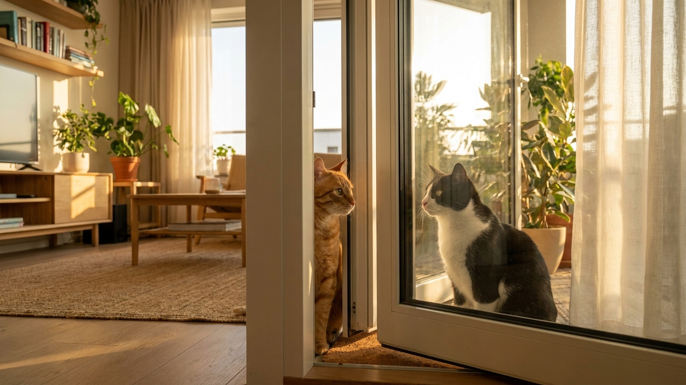

Вторую кошку берут и... ставят перед первой. Дальше — шипение, агрессия, метки по всей квартире, один кот прячется, другой не выходит из-под кровати. Знакомая история? Это классическая ошибка. Правильное знакомство занимает 2-4 недели, но в итоге кошки либо живут мирно, либо просто игнорируют друг друга — что тоже успех. Вот как это делается шаг за шагом.
Кошки — территориальные животные. У каждой в квартире есть «своя» территория, маршруты, ресурсы. Когда в дом приносят нового кота и сразу выпускают рядом с резидентом, это воспринимается резидентом как прямая угроза: чужак вторгся на его территорию без предупреждения.
Результат — стресс-реакция: агрессия, шипение, погони, у резидента может начаться цистит (стресс — частая причина идиопатического цистита у кошек), оба кота перестают нормально есть и ходить в лоток. Даже если внешняя агрессия стихла через день, психологическое напряжение остаётся неделями.
Правильный протокол решает эту проблему: кошки «знакомятся» постепенно, через запах, потом визуально, и только потом физически — уже в нейтральном контексте, без конкуренции за ресурсы.
Новая кошка живёт в отдельной комнате. У неё есть всё своё: лоток, миска с водой и едой, лежанка, когтеточка, игрушки. Дверь закрыта.
Что происходит в это время:
На 3-4 день поменяйте кошек местами: резидента пустите в комнату новой кошки, а новую — исследовать остальную квартиру. Каждая изучает запахи другой без контакта. Это мощный инструмент обмена информацией.
Берёте мягкую ткань или носок. Гладите ею одну кошку по мордочке (там феромонные железы) — потом подкладываете другой кошке под нос рядом с едой. Кошка нюхает запах чужака в момент, когда ей хорошо (еда = позитив). Потом меняете: ткань со второй кошки — первой.
Реакция в норме: осторожное обнюхивание, возможно, лёгкое шипение в первый раз. Затем — просто любопытство или безразличие. Это прогресс.
Дополнительно: начните использовать феромонный диффузор Feliway Multicat. Он выделяет синтетический аналог кошачьих феромонов, снижает тревожность и агрессию между кошками. Исследования показывают снижение межкошачьей напряжённости на 70%+ при корректном применении. Воткните в розетку в нейтральной зоне квартиры за 2-3 дня до начала знакомства. Работает 30 дней на один флакон.
Откройте дверь между кошками, но поставьте барьер — детские ворота, сетчатая дверь или стеклянная перегородка. Кошки видят и слышат друг друга, но не могут вступить в физический контакт.
Покормите обеих кошек с обеих сторон барьера. Расстояние, при котором обе кошки едят нормально — это рабочая дистанция. Каждый день немного сокращайте её, пока обе кошки не едят в 1-1,5 метрах от барьера без напряжения.
Признаки нормального прогресса: кошки смотрят друг на друга, но без неотрывного «охотничьего» взгляда, едят нормально, не шипят постоянно. Возможен периодический «выпад» к барьеру — это нормально, если не носит постоянный характер.
Убираете барьер. Первые встречи — короткие, 10-15 минут, под вашим наблюдением. Оба кота получают лакомства за спокойное поведение рядом друг с другом.
Отвлекайте от конфликта: игрушка-удочка, лазерная указка переключает внимание с чужака на добычу. Совместная «охота» создаёт положительную ассоциацию.
Сколько в среднем занимает полный протокол: от 2 до 8 недель в зависимости от темпераментов кошек. Котята обычно принимаются быстрее. Взрослые кошки с сильным территориальным инстинктом — медленнее.
Одна из главных причин конфликтов — конкуренция за ресурсы. Правило простое: ресурсов должно быть на одну единицу больше, чем кошек.
Некоторое напряжение и осторожность в начале знакомства — норма. Вот что уже сигнал проблемы:
При сигналах стресса — шаг назад к предыдущей стадии. Если стресс не снижается 3-5 дней — консультация с зооповеденческим специалистом (зоопсихологом). В сложных случаях назначают анксиолитики на короткий период — это нормальная ветеринарная практика.
Бывает, что кошки несовместимы. Признаки хронической несовместимости:
В таких случаях гуманное решение — найти одной из кошек другой дом. Это не поражение, а ответственный выбор в пользу качества жизни обоих животных. Хроническая стрессовая жизнь вдвоём хуже, чем раздельная.